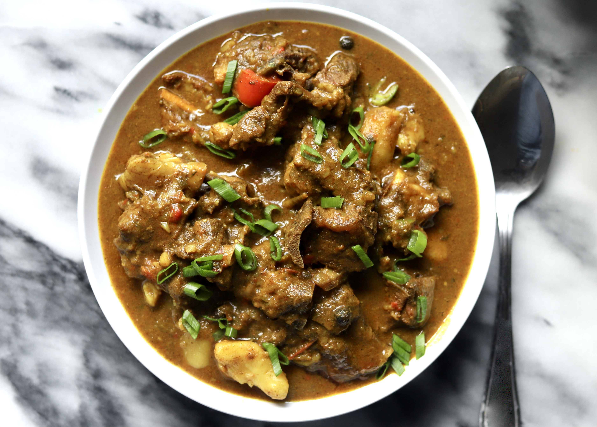

Home
Curry Goat

Description
Delicious spicy, savoury, homey Jamaican Curry Goat. A classic Jamaican recipe
that is honestly, not too difficult to make.
Ingredients
To clean meat (optional)
- Juice from 2 limes or 1 lemon or ¼ cup of vinegar
- Water as needed
To marinate goat
- 4 pounds of goat meat cubed
- 2 teaspoons salt plus more to taste
- Half of red onion sliced
- 4 large garlic cloves chopped
- 1 teaspoon minced ginger
- 5 green onions
- ½ red bell pepper
- ½ green bell pepper
- 2 scotch bonnet or habanero or to taste, sliced
- 3 stalks thyme
- 8 allspice berries or 1 teaspoon allspice
- 1 teaspoon garlic powder
- 1 teaspoon onion powder
- 1 teaspoon ground ginger
- 1 teaspoon paprika
- 1 teaspoon black pepper
- 2 tablespoons curry
To fry curry
- 2 heaping tablespoons curry
- 3 tablespoons of vegetable oil
To finish curry
- Water as needed
- ½ red bell pepper chopped
- ½ green bell pepper chopped
- 2-3 medium potatoes largely cubed
To garnish
Steps
-
If you wish, clean your cubed goat meat with water and juice from 2 limes or lemon or vinegar.
Place goat meat in a large bowl. Squeeze lime or lemon juice or pour vinegar over your goat meat
and follow with water as needed over your meat so it is nearly fully submerged. Use your hands to move
around the meat in the liquid and pour the water off. The water may be murky.
Rinse your goat with water one more time and pour this water off.
Set your goat meat aside and wash your sink thoroughly before proceeding to the next step.
-
Season your goat meat with two teaspoons of salt, toss to coat, and set aside in your fridge while you
prepare your other ingredients. Prepare all your veggies and aromatics and measure out your dry spices.
-
Place all your veggies and aromatics over your goat, your red and green bell peppers, sliced scotch bonnet
to taste, onion, green onion, thyme, garlic, and ginger.
- Place your dry spices over your goat meat, your garlic powder, ginger powder, whole allspice berries (or ground allspice),
curry powder, paprika, and black pepper.
- Toss your goat meat with the help of a large wooden spoon to make sure the goat meat is completely covered and the veggies
and seasoning and mixed thoroughly. Set aside your goat for at least 1 hour in the fridge, covered with plastic wrap or foil.
You can marinate your goat meat overnight in the fridge if you choose.
- When ready to cook, set your goat meat on the counter for 20 minutes, and when it is closer to room temp, in a large pot,
add your oil, and 2 heaping tablespoons of curry powder and fry for about 1 minute to 1 minute 30 seconds, stirring constantly
so it does not burn. You want your curry to darken slightly but you absolutely do not want it to burn or it will be bitter.
- Add your marinated goat into your pot and cook on medium to high heat for about 5-10 minutes stirring every minute so it does not burn.
Turn heat to medium-low and cover your pot with a lid and let simmer for 20 minutes.
- After 20 minutes, your goat should be steamed and there will be liquid that forms in the pot.
- Pour about 2 cups of water into your pot and simmer, partially covered, on low for at least 2 hours or until your meat is tender.
Stir periodically so it does not burn. Add water if necessary if your curry dries out too much. If your goat meat is not tender,
add more water, ½ a cup at a time and simmer until tender. You want your meat to be just about ready to come off the heat before
going to the next step.
- Just before the 2 hour mark, chop your potatoes and bell peppers. You want your potatoes fairly large or else they will completely
disintegrate in the curry. You want about 1-2 inch thick cubes. You can cut your bell peppers as large as you like them as well
but know they will also be more visible in the curry that the other veggies you added at the beginning.
- Add your potato and bell peppers and add to your pot of curry and simmer uncovered on low for 30 minutes until your curry thickens
and your potatoes cook completely.
- Cook until desired thickness is achieved and season with salt to taste.
- Serve with rice and peas, white rice or roti.